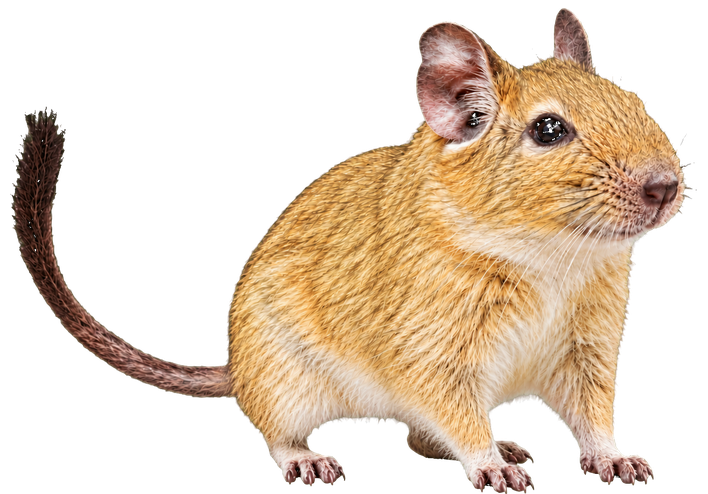
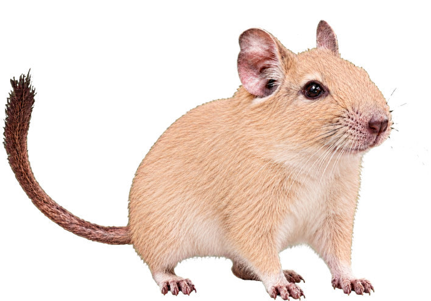
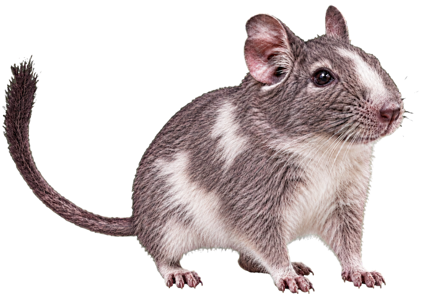

Shows up now and then
It pops up from below, peeks in from the side, or hops onto the screen. The app picks a motion each time.
A little degu appears while you work. Your wallpaper stays put, and your mouse clicks pass right through.
16 coat colors and 3 motions. Choose one color or mix several. Try the motions in the preview.

It pops up from below, peeks in from the side, or hops onto the screen. The app picks a motion each time.
A transparent window sits over your desktop. Your files and mouse clicks remain accessible.
Pick one color, several, or all 16. Set appearance intervals, sizes for each coat, and which monitors to use from the menu.
On Mac, click the paw in the menu bar at the top of the screen. On Windows, find it in the system tray at the bottom right. You can also choose coat colors, appearance intervals, size, and monitors there.
16 colors, each with three motions. Yellow Sand is a more golden visual variation of Sand.








Choose a Mac (macOS 12 or later) or Windows installer on the download page. If a warning appears when you first open the Mac app, follow these steps.